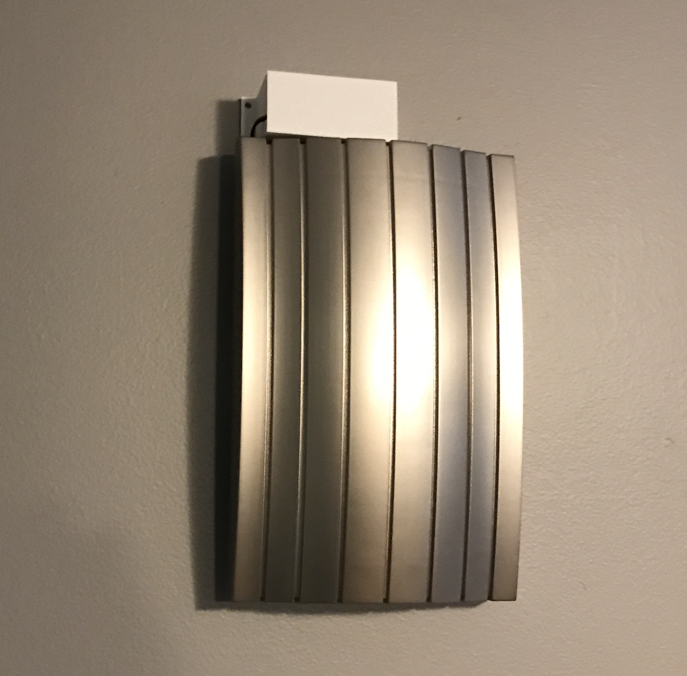
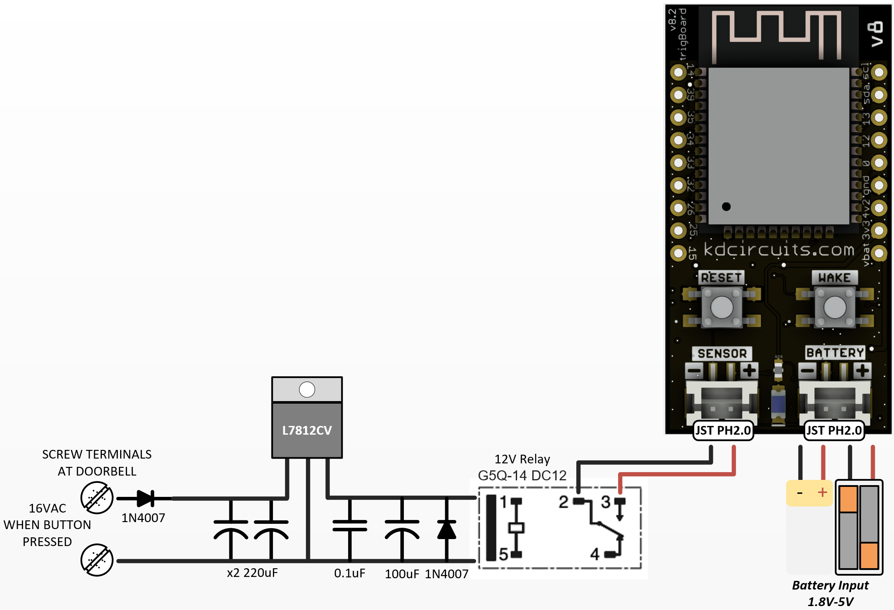
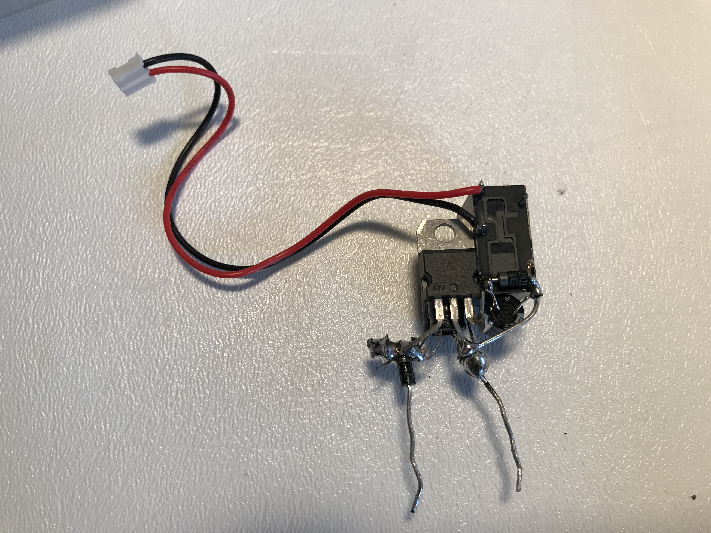

Door Bell Monitoring¶
Simple as it sounds - get a push notification when the door bell rings! Most doorbell systems are AC powered by a step down transformer off of AC MAINS to ~16VAC. Be careful with your wiring make sure to disconnect power before making connections and also note that your system may be different!
Relay Method Reccomended¶
This is the recommended method, simply because after a week of testing with the Electromagnet method, the Fed-Ex guy just smacks the door bell… so it barely rings. This is not enough time to wake the trigBoard, so I decided to use a 12VDC relay with regulator. Along with some large capacitors, this keeps the relay coil energized long enough to wake the trigBoard even with the fastest button press.
Parts¶
- Diodes are just simple 1N4007 but it’s nothing special, so just as long as it can block ~24V or so, it should work.
- Capacitors are 220uF Electrolytics, MAKE SURE THEY ARE AT LEAST 24V RATED. These would be good and same with the ceramic 0.1uF
- Most 12VDC relays would work, just as long as the coil current is low. This is what keeps the coil energized just from the capacitors if the button is quickly pressed. The one I used is a G5Q-14 DC12
- The 12V regulator is just what I had lying around, but it works nicely and can handle up to 35Vin. Just a simple L7812CV
Install¶
Not the best, but I soldered everything together, then just just wrapped the whole thing in electrical tape:
Programming¶
Well none needed! The base firmware out of the box will work! Just choose the way you want to be notified from the supported services page and just set to only wake on Contact Opening. The reason for this is in that case when the button is pressed very quickly, the board may wake up and and by the time it checks the contact, it will already be closed. So easiest to just trigger on the closure of the contact, or when the button is released.
Electromagnet Method¶

The trigBoard has a simple dry contact trigger input, so this circuit works by 1/2 have rectifying the 16VAC, so we have a DC voltage to excite the electromagnet. A couple capacitors smooth that out somewhat and a flyback diode in there takes care of the collapsing field when you release the button.
Parts¶
- Diodes are just simple 1N4007 but it’s nothing special, so just as long as it can block ~24V or so, it should work.
- Capacitors are 220uF Electrolytics, MAKE SURE THEY ARE AT LEAST 24V RATED. These would be good
- Electromagnet is rated for 24VDC, even though we’re hitting with less voltage, it’s still enough to trip the reed switch. Just a cheap one from Amazon

- trigBoard and Reed switch from Tindie store - I actually snipped the bare reed switch out of the magnetic sensor, to get it closer to the electromagnet.

Install¶
I was able to build the circuit just by twisting all of the leads together - watch your polarity on everything:
Then just taped that all up to make it safe leaving the two leads exposed to connect to the doorbell terminals.
I found that the reed switch needs to installed very close to the center of the electromagnet plate. And also the orientation is important - the magnet needs to pull the contact closed, so make sure you have it like this with electrical tape on the electromagnet so you don’t short out the switch leads:

Once that’s taped down, just cover and tape the whole thing down and you’re good to go!

Will post pics of it in the doorbell and video soon
Programming¶
Well none needed! The base firmware out of the box will work! Just choose the way you want to be notified from the supported services page and just set to only wake on Contact Closing and give it a message!